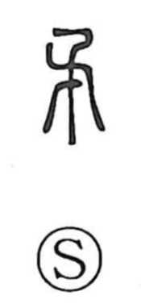

戈

Uncategorized
Kun: hoko | On: ka
halberd ・ spear ・ weapon
Explanation
戈 is a pictograph of a halberd with a long shaft. The Shuowen describes it as the long, two-zhang halberd mounted on war chariots. By contrast, 戟 names the variant with a lateral blade at the head. From this basic weapon sign, later graphs developed: one depicts a halberd set up on a stand to display martial authority, and another—written 適 in later usage—evokes the act of holding a halberd while going on patrol to conduct inspections. Bronze inscriptions preserve this administrative sense in phrases such as 遹省, “to patrol and inspect.”